Menu: Dimension - Leader
Shortcuts: D, E | L, D
Commands: leader | dimlea | de | ld

Description:
Leaders are arrows that usually point from a text entity to another entity
as shown below. In the example, the text entity "N7" is describing a surface
property by pointing to it with a leader.

Procedure: